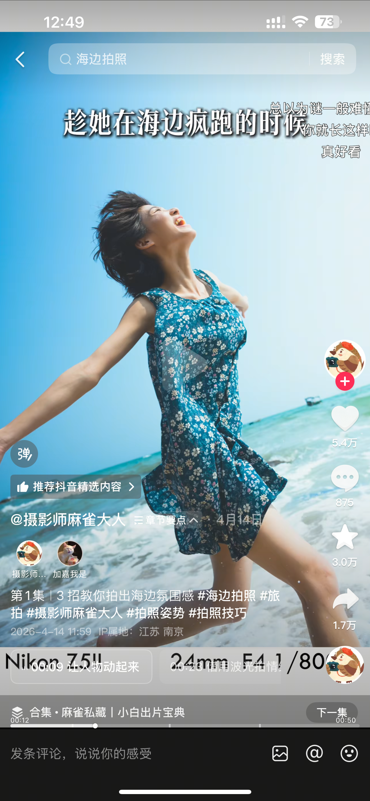
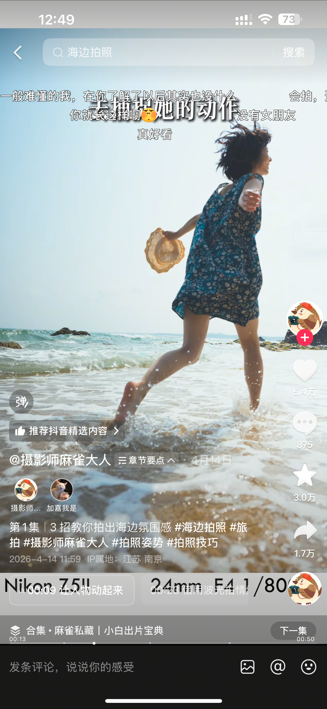
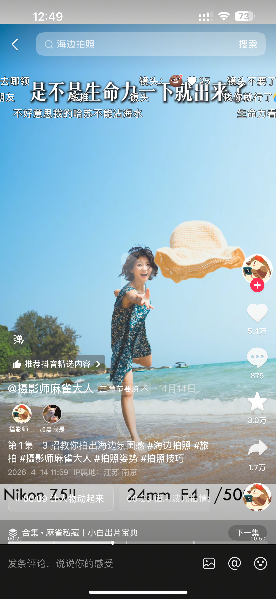
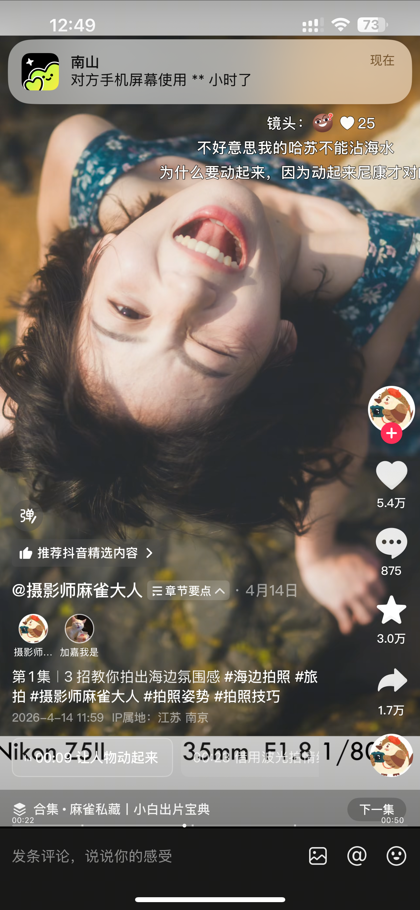
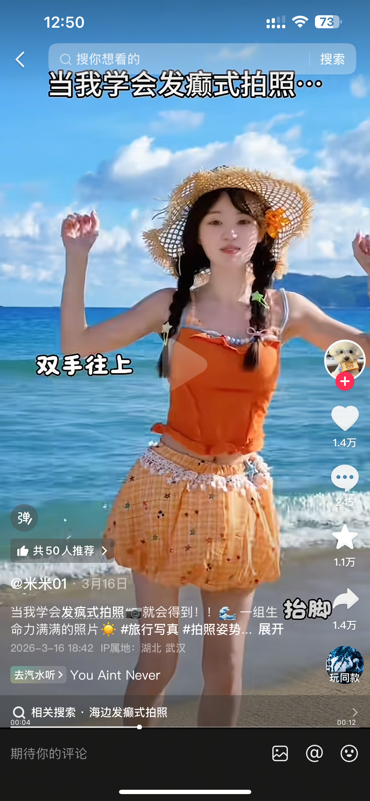
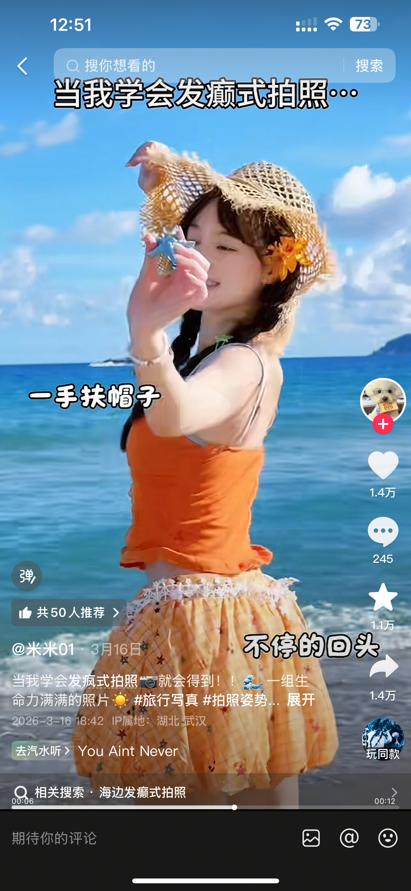

海边生命力｜今天下午拍摄执行方案
一、拍摄目标
这次不拍站定的标准游客照，重点拍出人物在海风、阳光和浪花里的真实反应：走、跑、回头、抬手、坐下、踩水、张开双臂。画面整体保持清透、明亮、轻松，粉色裙子和蓝色海面形成柔和对比。
成片关键词： 粉色、海风、笑容、裙摆、浪花、自由、生命力。
模特状态： 不要求一直看镜头。优先让她做连续动作，摄影师抓表情和裙摆自然变化。
二、今天下午的时间安排
以下时间以“日落前约 90 分钟”为基准，若实际日落时间不同，整体前后平移即可。
| 阶段 | 用时 | 拍摄内容 | 说明 |
|---|---|---|---|
| 到场准备 | 15 分钟 | 看潮位、选干净背景、整理裙摆和头发 | 先确认安全路线，不急着下水 |
| 热身适应 | 15 分钟 | 沙滩走动、侧身、回头、整理头发 | 让模特适应风和镜头 |
| 静态与半身 | 25 分钟 | 贝壳、花束、树枝框景、坐姿 | 先拍干净、稳定的画面 |
| 动态高潮 | 30 分钟 | 奔跑、转身、张臂、踩浪、扬裙摆 | 连拍，不要一个动作只拍一张 |
| 低角度补拍 | 10 分钟 | 贴近海面拍裙摆和浪花 | 摄影师不要站在浪线内 |
| 收尾 | 10 分钟 | 背影、看海、自然笑、离开海边 | 留出安静画面，也检查是否漏拍 |
三、服装、道具与现场准备
- 主服装：粉色裙子；提前确认裙摆长度，避免踩住裙边。
- 道具优先级：贝壳或小花束二选一即可；如果没有道具，用手捧海水、整理裙摆替代。
- 可选道具：草帽可以作为动作参考，但不要让帽子遮住脸；帽子只在一部分画面中出现。
- 必须携带：纸巾、毛巾、拖鞋、备用发绳、别针、透明防水袋、饮用水。
- 镜头建议：50mm 作为主力；有 24/35mm 时用于拍环境全身和奔跑画面。没有广角也没关系，摄影师后退拍即可。
- 相机机位：半身接近眼睛高度；全身大约在腰到胸口高度；动态时宁可多留一点裙摆和海面空间。
四、现场动作指导
不要让模特一次性记很多姿势，每次只给一个简单指令，连续拍 5—10 张。
1. 进入状态：走起来
口令可以这样说：
“先别看我，沿着海边慢慢走。走三步以后回头看我，再把头转回海面。”
- 身体朝海，脸回到镜头方向；
- 一只手整理头发或裙摆，另一只手自然下垂；
- 连续拍“看海—回头—笑—再看海”；
- 不要让她停住摆出僵硬的正面站姿。
参考：IMG_5699.PNG、IMG_5700.PNG、IMG_5701.PNG、IMG_5711.HEIC、IMG_5718.HEIC。
2. 半身与近景：脸转 15°—30°
- 身体先侧 30°—45°；
- 脸再转回来找镜头；
- 下巴微收，不要用力低头；
- 相机比眼睛高约 5—10 cm，模特轻轻抬眼；
- 拍“看镜头—看旁边—低头—回头”的连续变化。
参考：IMG_5704.PNG、IMG_5705.PNG、IMG_5707.PNG、IMG_5710.HEIC、IMG_5712.HEIC、IMG_5716.HEIC、IMG_5717.HEIC、IMG_5719.HEIC。
3. 道具动作：不要盯着道具摆拍
贝壳或花束只需要给手一个事情做：
- 低头看贝壳，再抬眼看海；
- 把贝壳靠近脸，但不要挡住眼睛；
- 把花束放在胸前，身体侧向海面；
- 抱着花束走两步，再回头笑；
- 拍一张手部、道具和裙摆的近景。
参考：IMG_5709.HEIC、IMG_5710.HEIC、IMG_5713.HEIC、IMG_5714.HEIC、IMG_5716.HEIC、IMG_5717.HEIC。
4. 动态高潮：把“生命力”拍出来
按难度从低到高执行：
- 迎风抬手，头发被吹起来时连拍；
- 向镜头走来，走到第三步时回头；
- 向海边跑 3—5 步，摄影师平移或后退跟拍；
- 在浅水边抬腿、踢起一点水花；
- 张开双臂迎着海浪，动作结束后自然大笑；
- 双手提起裙摆，在浪线外转半圈；
- 最后拍一次从海边走回来的背影。
参考：IMG_5715.HEIC、IMG_5718.HEIC、IMG_5720.HEIC、IMG_5721.HEIC。
摄影师注意： 动作开始前先对焦并预留快门速度；每个动作至少连拍一组，不要只等“标准姿势”。人物表情比动作幅度更重要。
五、必拍清单
今天至少完成下面 12 类画面，每类选出 1—3 张即可：
- [ ] 环境全身：人物在蓝天、海面和沙滩之间，交代地点。
- [ ] 侧身迎风：身体朝海，脸回头看镜头。
- [ ] 近景笑容：头发被风吹起，背景保持干净。
- [ ] 坐在海边：手捧贝壳或花束，拍自然聊天感。
- [ ] 树枝框景：人物置于枝条或自然前景后面。
- [ ] 走向海边：裙摆和脚步有连续变化。
- [ ] 回头：背对镜头走几步后回头笑。
- [ ] 张臂：人物与海浪同框，表现情绪释放。
- [ ] 踩浪：只到脚踝或浅水处，抓水花和裙摆。
- [ ] 扬裙摆：留足裙摆运动空间，避免裁掉手脚。
- [ ] 道具特写：贝壳、花束、手和裙子形成细节画面。
- [ ] 安静收尾：背影或侧脸看海，不再安排大动作。
六、构图与曝光执行
- 海平线：全身照尽量保持水平；人物头部不要正好落在海平线上。
- 天空比例：想拍轻盈感时多留天空；想突出人物时减少天空，把裙摆放在画面下方。
- 逆光：可以拍，但先保证脸部不死黑；必要时让模特侧向光线，或用反光板补脸。
- 动态快门：跑动、甩裙和踩水建议使用较快快门，避免裙摆和手臂糊掉。
- 低机位：相机可以降低到膝盖附近拍全身，但不要用明显低机位近距离怼脸。
- 默认机位：身体侧 45° → 脸回 15°—20° → 镜头接近眼睛高度 → 摄影师后退一点拍。
七、安全与备用方案
- 只在平缓、干净、确认安全的浅水区拍；水深控制在脚踝附近，不追求大浪。
- 礁石、湿滑地面和退潮后的青苔区域不安排奔跑、跳跃和转身。
- 裙子一旦被浪打湿，先拍湿裙效果，再立即换干鞋或擦脚，避免着凉和滑倒。
- 如果风太大，取消帽子和大幅跑动，改拍侧脸、头发、裙摆和手部细节。
- 如果阳光太硬，先拍树影框景、侧逆光和近景；等光线变柔后再拍海边全身。
- 如果不能下水，使用“走向海边—回头—张臂—坐在沙滩”的动作组合，也能完成整组片子。
八、参考图片索引
A. 姿势参考截图：用于现场模仿动作
IMG_5698.PNG：开场标题，核心提示是“让人物动起来”。
IMG_5699.PNG：侧身伸展、抬头迎风。

IMG_5700.PNG：提包奔跑、拍裙摆运动轨迹。

IMG_5701.PNG：手持草帽向海边走动。

IMG_5702.PNG：躺姿或低机位仰拍。

IMG_5703.PNG：正面站立与轻微走动。
IMG_5704.PNG：手靠近镜头的互动近景。
IMG_5705.PNG：单手扶帽、看向镜头。
IMG_5706.PNG：举手与抬头。

IMG_5707.PNG：碰帽檐、身体微侧。

{kind=link}
{kind=link}
{kind=link}
{kind=link}
{kind=link}
{kind=link}
{kind=link}
{kind=link}
{kind=link}
{kind=link}
B. 粉色裙成片参考：用于确定画面目标
IMG_5708.HEIC：环境与人物组合，参考开场构图。

IMG_5709.HEIC：坐在海边、手捧贝壳。

IMG_5710.HEIC：手捧贝壳的近景。

IMG_5711.HEIC：走入浅水区的安静全身照。

IMG_5712.HEIC：靠近镜头微笑。

IMG_5713.HEIC：树枝框景与坐姿。

IMG_5714.HEIC：坐在海边自然笑。

IMG_5715.HEIC：浪花中张开双臂。

IMG_5716.HEIC：侧脸、贝壳和海浪。

IMG_5717.HEIC：手捧花束的半身肖像。

IMG_5718.HEIC：张臂奔向海边。

IMG_5719.HEIC：低机位动态近景。

IMG_5720.HEIC：沙滩上的全身动态。

IMG_5721.HEIC：水边扬起裙摆。

HEIC 是原始参考图格式。现场拍摄时以动作和构图为准，不需要逐张复制；优先完成“静态—走动—道具—踩水—背影”五个阶段。